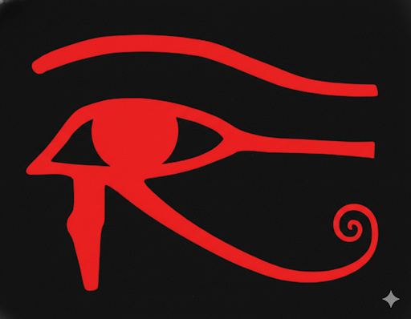
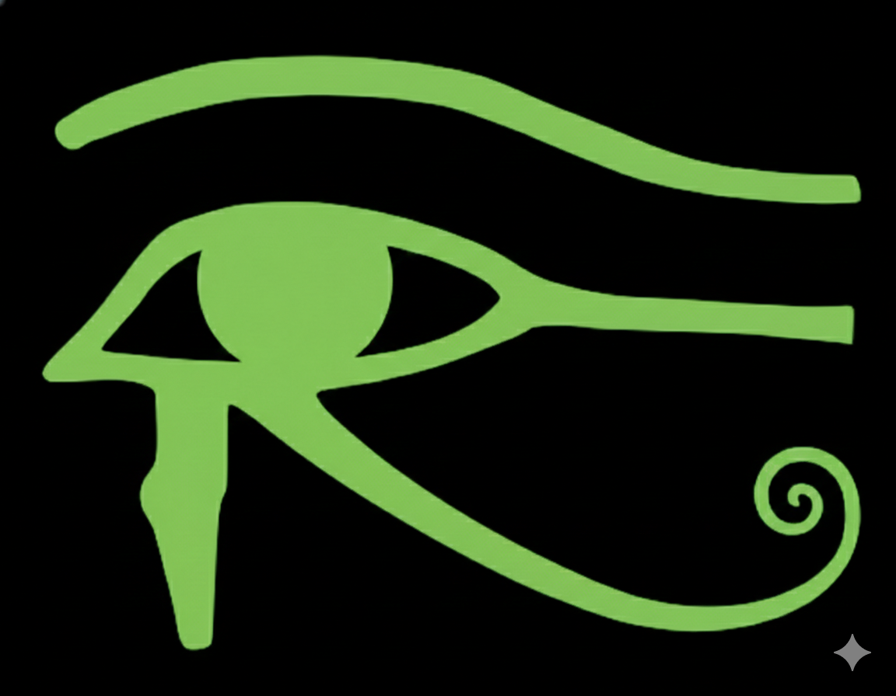

We Declare War on "Contaminated Information"
The "Eye of RA" in the Search Engine Filter Industry

INTUITION 3.0
The Judgement of T.C.I
The "Eye of RA" in the Search Engine Filter Industry
The Judgement of T.C.I